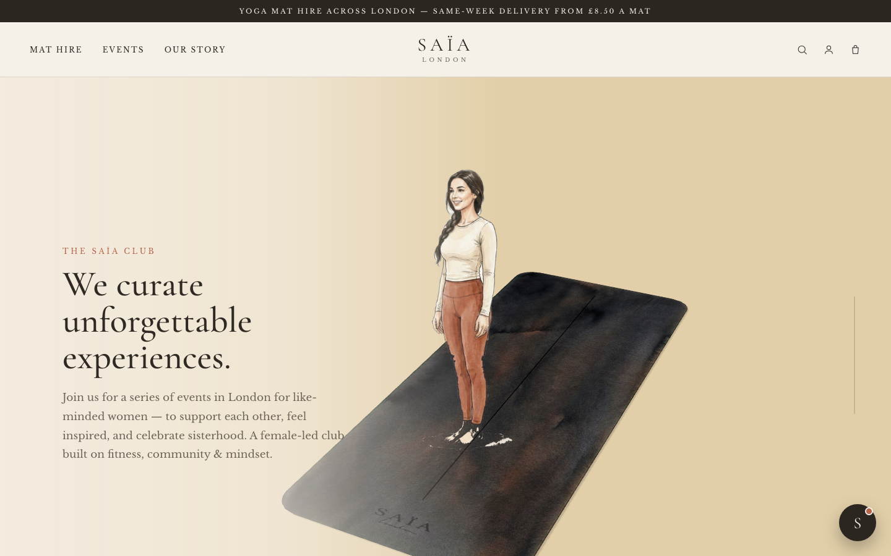
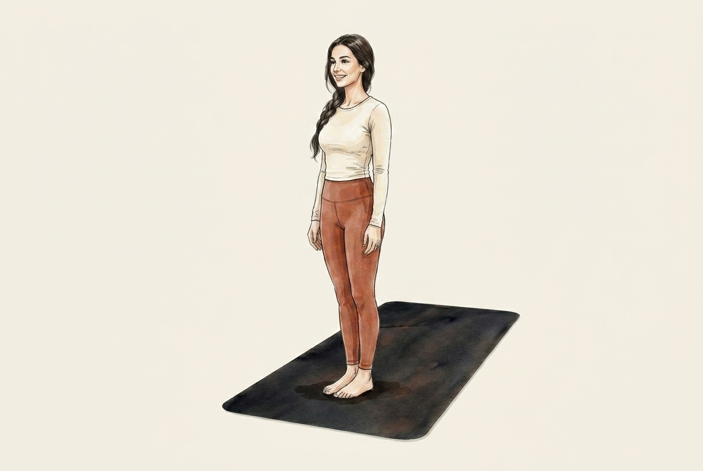
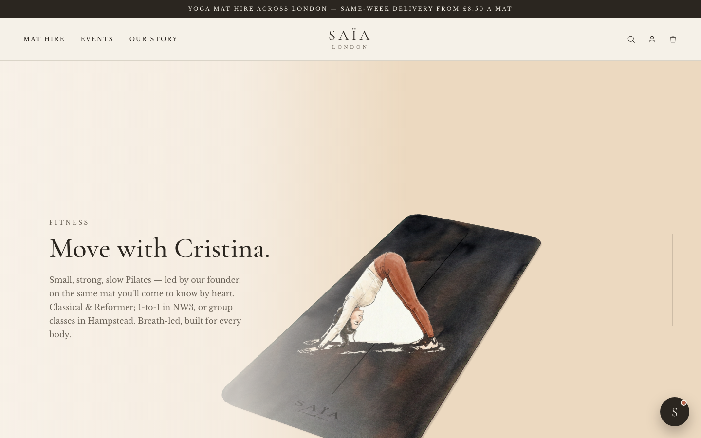
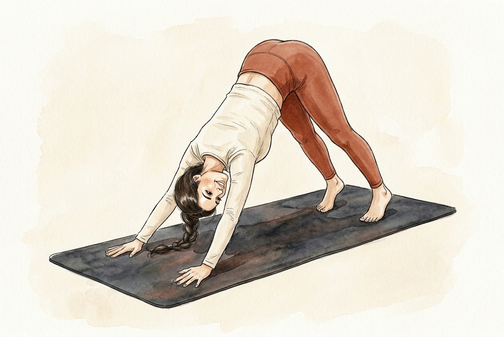
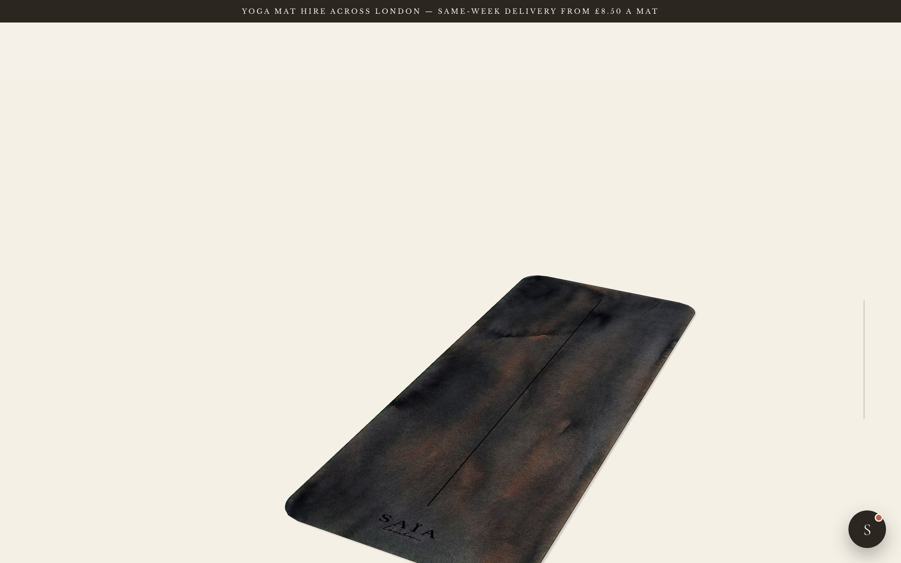
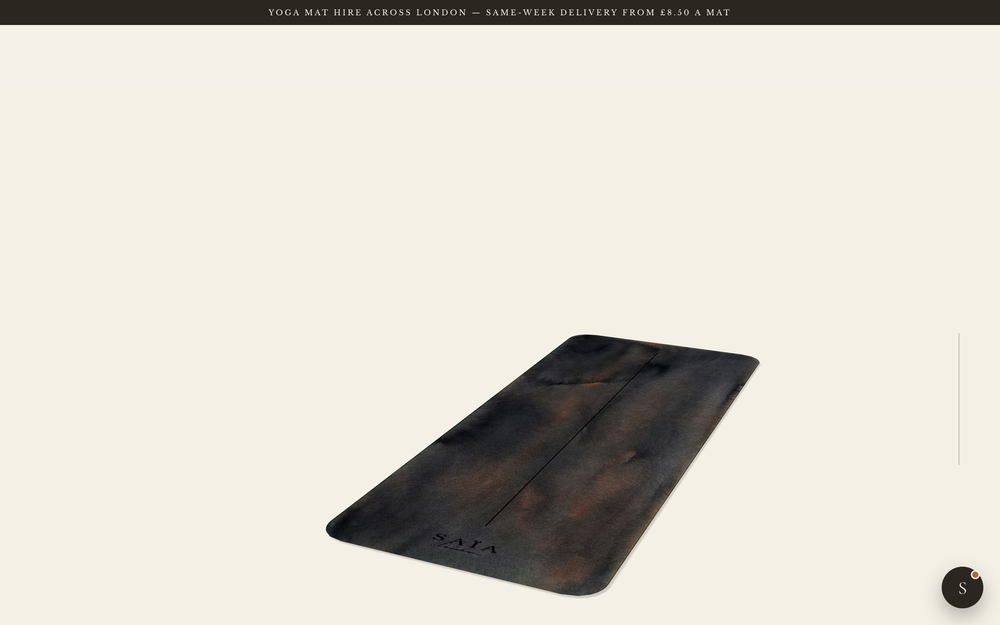
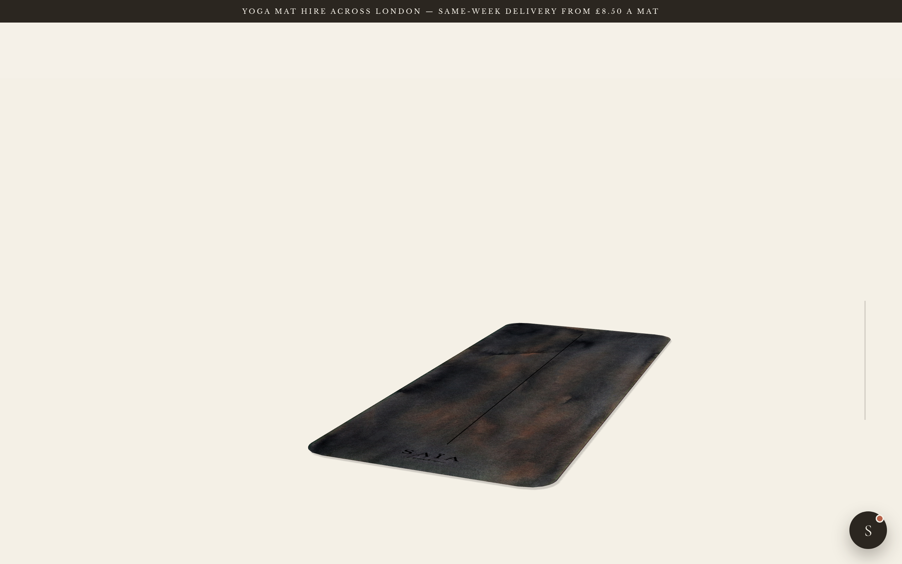
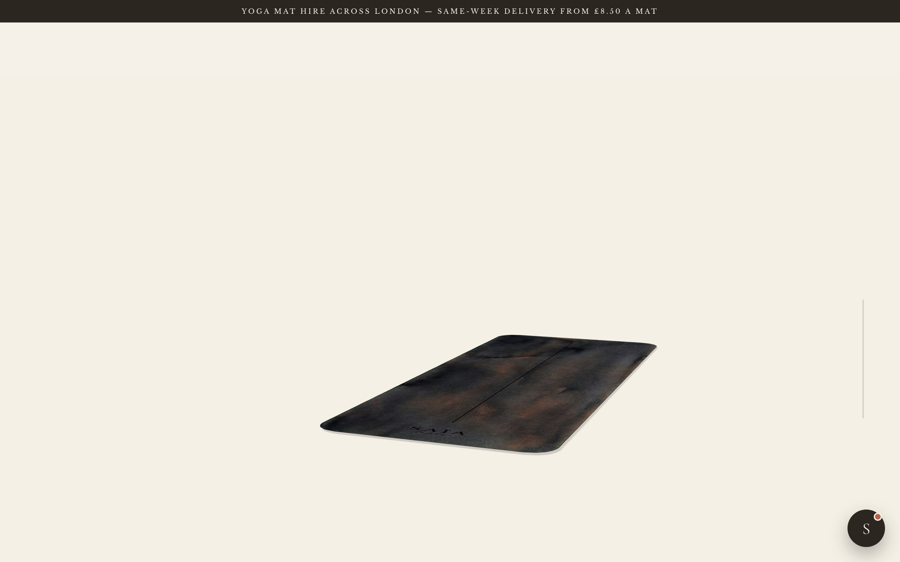

The core fix: instead of pasting a flat, eye-level drawing of Cristina onto a steeply-angled 3D mat (two different cameras → she floats), we render the real mat at a gentle angle and draw her in that same perspective, on the mat. Below: the old broken composite vs. the new test renders.
Left = what's live now (flat figure, steep mat, wrong scale, white foot artifacts). Right = new test, drawn to the mat's perspective at a gentle angle. Same two poses.




The figures above used angle C (gentle). Here are the candidate angles of your real watercolour mat — the mat eases from today's steep angle (A) toward a flatter floor view. Pick the one that should host the figures; I'll regenerate all 15 poses to whichever we lock.




Notes · The test images still have the mat baked in — that's fine: because every pose is drawn from the same mat render, the mats are consistent (this is what fixes the old doubling). The 3D mat would morph, ease to this angle, then hand off to these illustrations. Open questions for you: (1) which angle, A–D; (2) is the figure scale-on-mat right, or should she be larger/smaller; (3) do the contact + grounding read as believable?